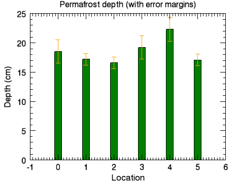

Use error plots singly or in conjunction with other plots to show error values. The example below illustrates how to use an error plot with a bar plot to show a comparison of data as well as the error values.

The code shown below creates the graphic shown above. You can copy the entire block and paste it into the IDL command line to run it.
; Define the data
loc = INDGEN(6)
depth = [18.5, 17.2, 16.6, 19.2, 22.3, 17.1]
depth_error = [2.0, 1.0, 1.0, 2.0, 2.0, 1.0]
; Create the barplot
bplot = BARPLOT(depth, FILL_COLOR='green', $
YRANGE=[0,25], WIDTH = 0.25)
; Create the error plot on top
eplot = ERRORPLOT(depth, depth_error, $
LINESTYLE = 6, $
ERRORBAR_COLOR = 'orange', $
ERRORBAR_CAPSIZE = 0.25, $
XTITLE='Location', YTITLE='Depth (cm)', $
TITLE='Permafrost depth (with error margins)', $
/OVERPLOT)